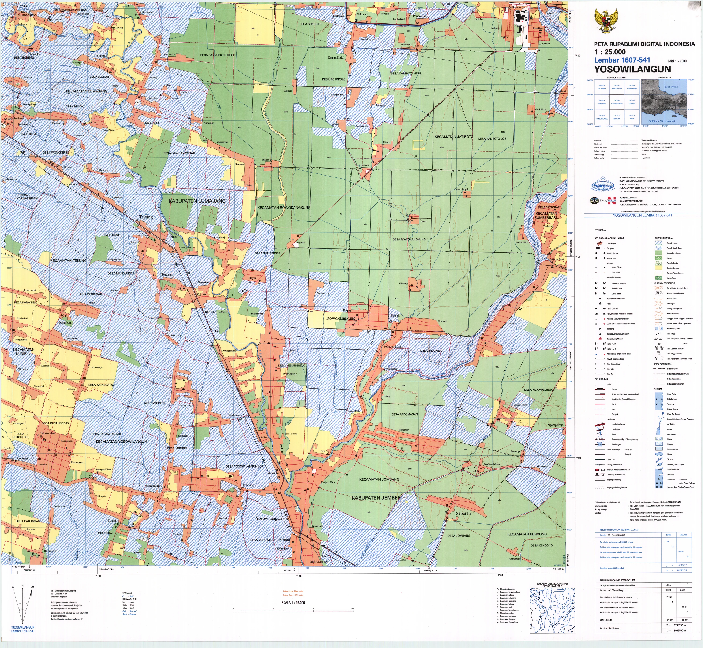

Faktual
Nama, nilai, lokasi, satuan, waktu, atau sumber tidak benar atau tidak dapat ditelusuri.
Evaluasi peta dilakukan sebagai satu rangkaian. Ketepatan data tidak cukup apabila simbol sulit dibaca; tampilan yang menarik juga tidak cukup apabila proyeksi, skala, sumber, atau batas interpretasinya tidak sesuai.
Nama, nilai, lokasi, satuan, waktu, atau sumber tidak benar atau tidak dapat ditelusuri.
Normalisasi, klasifikasi, proyeksi, skala, atau generalisasi tidak sesuai dengan pertanyaan.
Simbol, warna, teks, legenda, atau tata letak menghambat pembacaan dan menimbulkan makna ganda.


Sumber contoh: Introduction to Cartography.

Rekomendasi harus menyebutkan masalah, dampak, dan tindakan yang diperlukan.
| Kurang jelas | Lebih operasional |
|---|---|
| Warnanya kurang baik. | Gunakan urutan nilai terang–gelap untuk kelas rendah–tinggi agar urutan data terlihat. |
| Legendanya diperbaiki. | Tambahkan satuan, tahun, dan batas kelas; samakan warna legenda dengan warna pada muka peta. |
| Petanya terlalu ramai. | Kurangi kontras jalan lokal dan label sekunder agar tema utama menjadi lapisan yang pertama terlihat. |